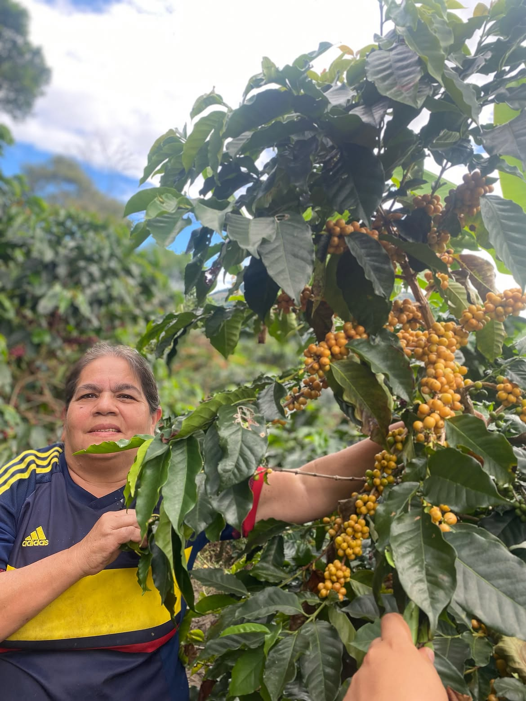
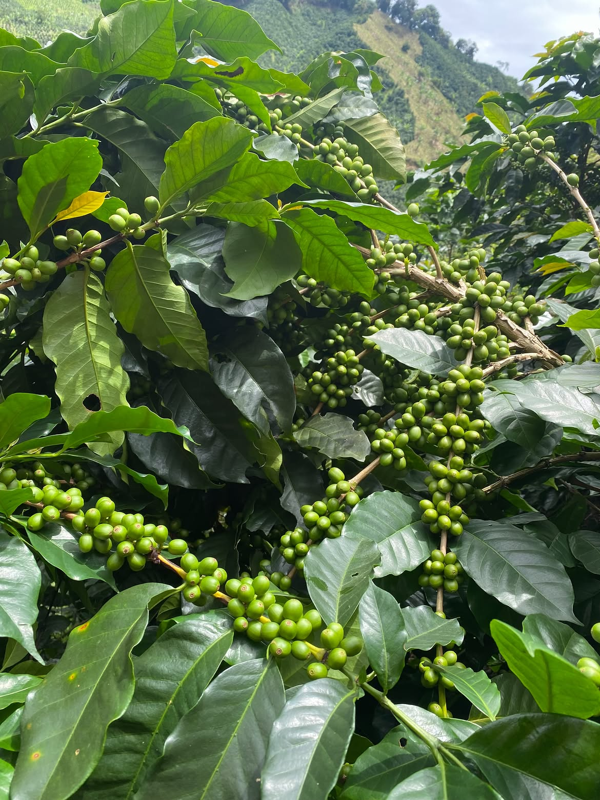
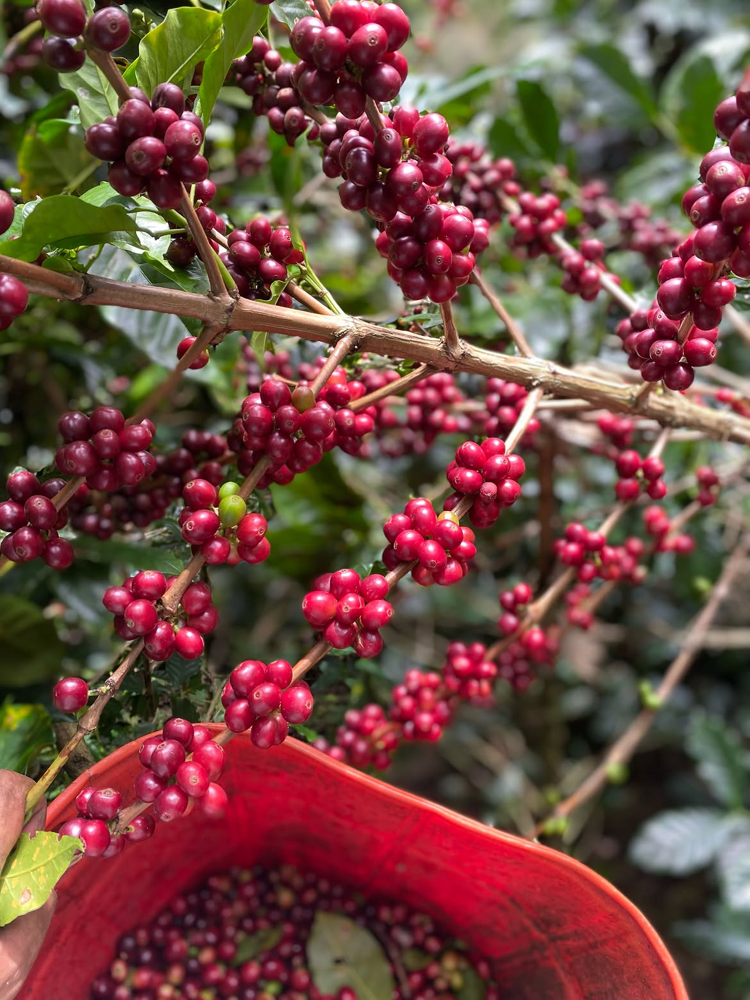
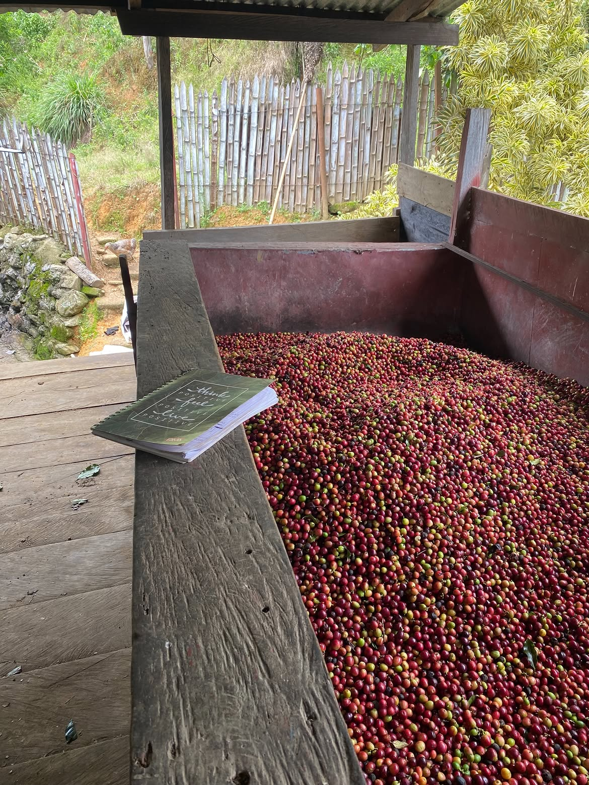
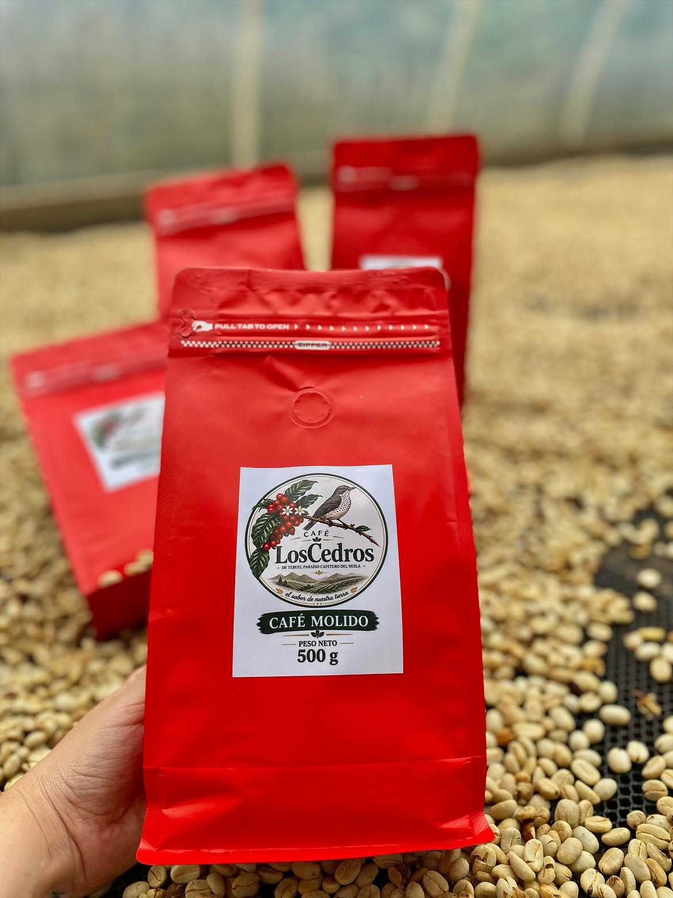

De nuestra finca
Una historia que empieza en nuestras propias montañas.
Teruel, Huila · Colombia
Entre montañas, cafetales y trabajo familiar nace Café Los Cedros: un café que lleva el carácter de nuestra finca directamente hasta tu taza.
Una historia que empieza en nuestras propias montañas.
Teruel, Huila, Colombia: tierra de montaña y café.
El grano recibe atención desde el cafetal hasta el secado.

Una historia que nace en familia.Nuestra historia
Entre las montañas de Teruel, Huila, donde se encuentran el clima, la tierra y el trabajo de nuestras familias, nace la historia de Café Los Cedros.
Aquí comienza nuestro recorrido: en nuestra finca, rodeados de cafetales y de una tierra que llevamos con orgullo. Queremos mostrarte paso a paso todo lo que hay detrás de nuestro café, desde sus primeros días hasta llegar a una taza llena de sabor.
“El sabor de nuestra tierra.”
Detrás de cada grano
Cada etapa suma al resultado final. Estas imágenes muestran una parte del trabajo que hay detrás de Café Los Cedros.

Todo empieza en las plantas que crecen en nuestra tierra.

Observamos el fruto y cuidamos cada paso antes de avanzar.

Cuidamos el grano durante el secado para conservar su esencia.

El café llega molido y preparado para acompañar tus momentos.
Galería
Momentos reales de la finca, el proceso y nuestro producto.
Ya está disponible
Haz tu pedido y acompaña tus mañanas, tardes y momentos especiales con un café nacido en nuestra tierra.
Quiero hacer mi pedidoConversemos
¿Ya lo probaste? Escríbenos para conocer disponibilidad, precios, entregas y realizar tu pedido.
Pedidos directos
Pregunta por el café disponible y coordinamos tu pedido.
Escríbenos por WhatsApp ¿Que esperas?.